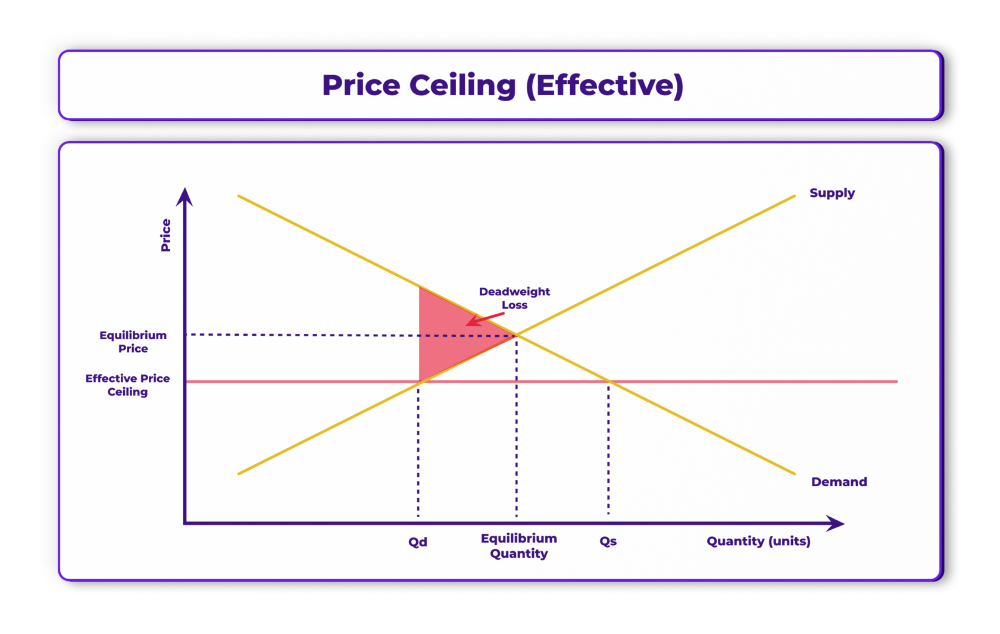
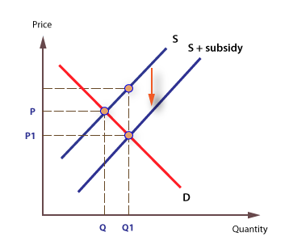

Ang Market Intervention ay ang pakikialam ng pamahalaan sa pamilihan upang maitama ang mga sitwasyong hindi patas o hindi epektibo ang merkado. Layunin nitong protektahan ang kapakanan ng mamimili at prodyuser.
Ang pamahalaan ay maaaring magtakda ng mga limitasyon sa presyo ng mga produkto upang maiwasan ang labis na pagtaas o pagbaba ng presyo.
Ang subsidy ay tulong pinansyal ng gobyerno sa mga prodyuser upang mapababa ang gastos sa produksyon. Dahil dito, bumababa ang presyo at nadaragdagan ang supply.
Halimbawa: Tulong sa magsasaka para sa abono at binhi upang bumaba ang presyo ng bigas.
Ang buwis sa mga produkto ay nagpapataas sa gastos ng produksyon kaya maaaring bumaba ang supply. Ang mga produktong may masamang epekto (tulad ng alak at sigarilyo) ay madalas patawan ng mataas na buwis upang mabawasan ang konsumo.
Maaaring makialam din ang pamahalaan sa pamamagitan ng pagbibigay ng import quota, pagbabawal ng bentahan, o regulasyon sa mga dayuhang produkto upang maprotektahan ang lokal na industriya.
| Uri ng Interbensyon | Layunin | Posibleng Epekto |
|---|---|---|
| Price Ceiling | Pababaing presyo ng produkto | Kakulangan sa supply |
| Price Floor | Protektahan ang prodyuser | Labis na supply |
| Subsidy | Pababain ang gastos sa produksyon | Dumarami ang supply |
| Tax | Kontrolin ang paggamit o konsumo | Bumababa ang demand |
Sa kabuuan, mahalaga ang interbensyon ng pamahalaan upang mapanatiling balanse, makatarungan, at abot-kaya ang kalakalan sa merkado.
 